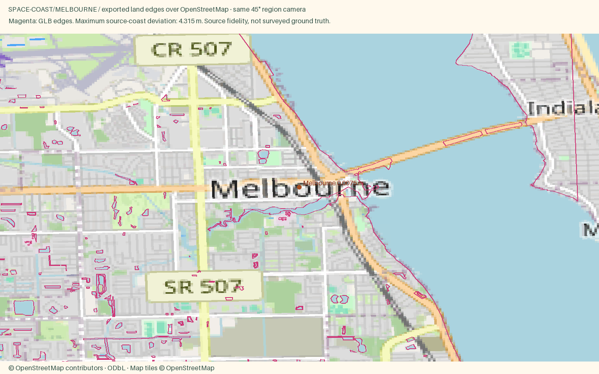

Melbourne
Open atlas · Accuracy CSV · Sourced medians
Region
Melbourne
Open districtDowntown streets, Crane Creek harbor and the causeway across the Indian River.
Source alignment

Manual fixes
- District palettes were selected editorially from local or regional character references; these colors are not a surveyed facade inventory.
- Separated mainland Cocoa (new cocoa-village ID) from the existing cocoa ID, which remains Cocoa Beach; corrected the beach city price source.
- Added six missing cities and coastal communities. Residential styles use the approved low-house recipe; explicit commercial and apartment tags retain their height handling.
- Existing Census land context continues beyond the OSM data rectangle, avoiding artificial water edges at the package boundary.